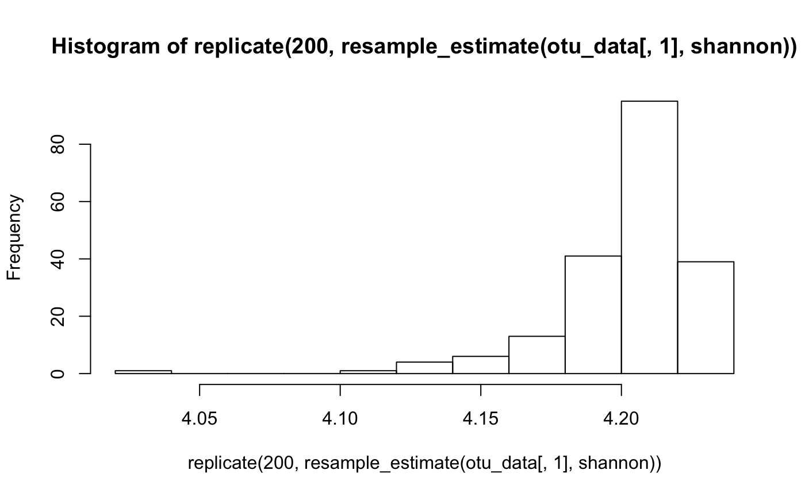
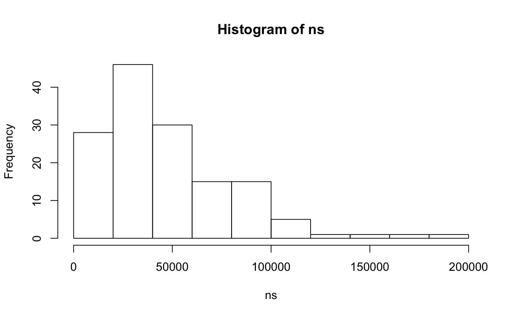
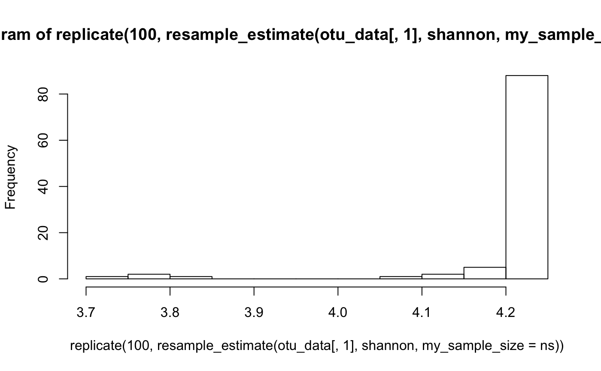
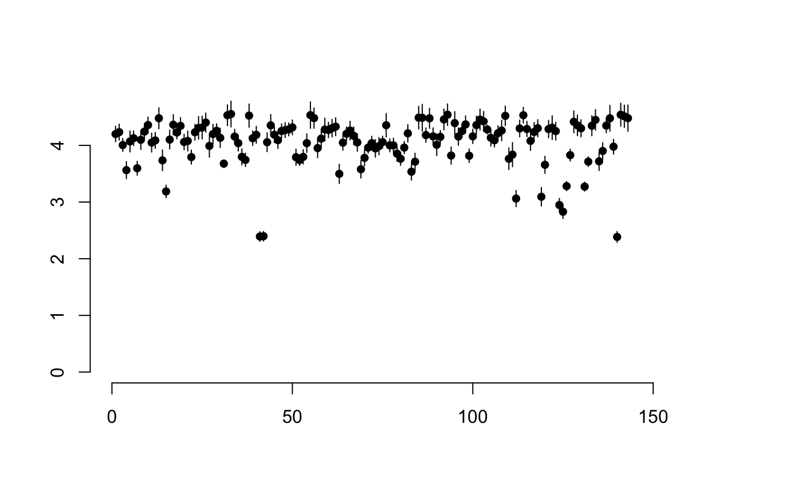
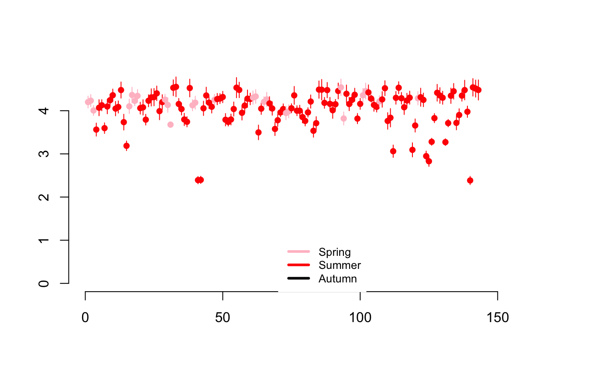
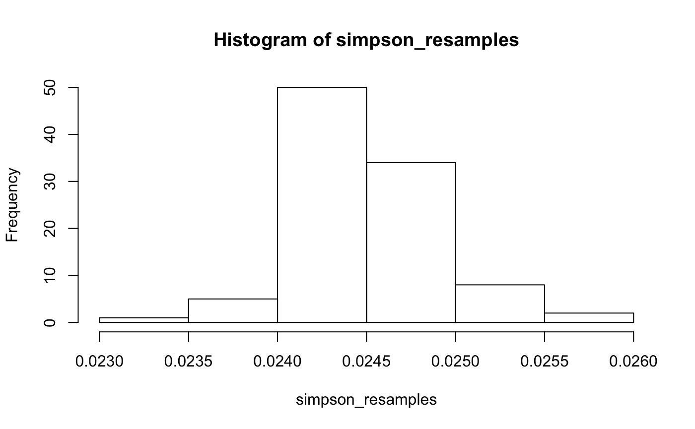

breakaway is a package for species richness estimation and modelling. As the package has grown and users have requested more functionality, it contains some basic generalisations of the statistical philosophy that underpins breakaway to the general alpha diversity case. Because of the flexibility of the modelling strategies, most users of breakaway are microbial ecologists with very large OTU tables, however, nothing should exclude a macroecologist from using the same tools. If you have a macroecology dataset and want to use this package, I would love to hear from you so please feel free to contact me (email or via Github’s Issues/Projects infrastructure).
This vignette will lead you through
breakaway to estimate species richnessbetta to model changes in alpha diversity with covariatesIf there is something that you would like explained please feel free to request it!
Download the latest version of the package from github.
### Run the first two lines at home! ####
# install.packages("devtools")
# devtools::install_github("adw96/breakaway")
library(breakaway)
data(toy_otu_table)
data(toy_metadata)
## For historical reasons we going to call them:
otu_data <- toy_otu_table
meta_data <- toy_metadata
head(meta_data)## Years bloom2 Period Site
## Sample1 2008 no Spring Littoral
## Sample2 2008 no Spring Pelagic
## Sample3 2008 no Spring Pelagic
## Sample4 2008 no Summer Pelagic
## Sample5 2007 no Summer Littoral
## Sample6 2007 no Summer PelagicIt is important that the column names of the OTU table is the same as the rownames of the covariate information. Remember to reorder them if they don’t match! You can check this with
head(colnames(otu_data) == rownames(meta_data))## [1] TRUE TRUE TRUE TRUE TRUE TRUEWe’re now going to “collapse” the otu_data’s columns (samples) into frequency tables. Frequency tables…
frequencytablelist <- lapply(apply(otu_data,2,table),as.data.frame)
frequencytablelist <- lapply(frequencytablelist,function(x) x[x[,1]!=0,])
head(frequencytablelist[[63]])## Var1 Freq
## 2 1 35
## 3 2 22
## 4 3 15
## 5 4 17
## 6 5 11
## 7 6 10Interpretation: In this sample, there were 57 different species observed only once (singletons), 25 different species observed only twice, …, 1 species observed 171 times.
Let’s run breakaway on the first frequency count table
breakaway(frequencytablelist[[1]])## ################## breakaway ##################
## The best estimate of total diversity is 359
## with std error 326
## The model employed was model_1_1
## The function selected was
## f_{x+1}/f_{x} ~ (beta0+beta1*(x-xbar))/(1+alpha1*(x-xbar))
## Coef estimates Coef std errors
## beta0 1.00985054 0.17827684
## beta1 0.10949383 0.06709395
## alpha1 0.08960881 0.09572568
## xbar 8.5You should get some output to screen, including your estimate & s.e., and a plot of the fits to the ratios. Note that it is not a fit to the frequencies, it is a fit to the ratios of frequencies. You would never need to include this type of plot in one of your papers. It is solely for you to check for model misspecification. What’s model misspecification? If the black diamonds don’t remotely follow the pattern of the white circles, that’s model misspecification.
Sometimes, breakaway’s usual procedure doesn’t work, that is, it gives a negative estimate, which is of course silly. In that case, breakaway returns a different model’s result. It’s called the WLRM. There isn’t a picture. Here is an example of a case where breakaway returns the WLRM.
breakaway(frequencytablelist[[60]])## We used 1/x weighting.
## ################## breakaway ##################
## The best estimate of total diversity is 414
## with std error 18
## The model employed was model_1_1
## The function selected was
## f_{x+1}/f_{x} ~ (beta0+beta1*(x-xbar))/(1+alpha1*(x-xbar))
## Coef estimates Coef std errors
## beta0 1.274646798 0.27932103
## beta1 0.031057755 0.08576988
## alpha1 -0.002888851 0.07627283
## xbar 15breakaway can defer to the WLRM for several reasons. Perhaps there are too many singletons. Perhaps there isn’t a long enough tail. Perhaps there is false diversity. In this case, there was probably not enough data. Let’s see if this failure was sensitive to the singleton count by running breakaway_nof1. This requires no singleton count (implicit is that the singleton count was erroneous) and predicts it from the other frequencies.
breakaway_nof1(frequencytablelist[[60]][-1,])## No breakaway models converged.################## breakaway ##################
## The best estimate of total diversity is 358
## with std error 10
## The model employed was the WLRMThe reference for this method: Willis, A. (2016). Species richness estimation with high diversity but spurious singletons.
breakaway_nof1 is an exploratory tool for assessing sensitivity of breakaway to the singleton count. You should not use it for diversity estimation – only diversity exploration :)
Let’s move on to looking at the Objective Bayes procedures of Kathryn Barger. It’s the latest and greatest in diversity estimation!
There are 4 different types of objective bayes estimates, due to 4 different models. If you have time play with all of them! For now we are just going to look at the negative binomial.
## Uncomment this at home: just takes a while for compiling
set.seed(2)
#objective_bayes_negbin(frequencytablelist[[1]], plot = F)
### Play with these later
#objective_bayes_poisson(frequencytablelist[[60]])$results
#objective_bayes_geometric(frequencytablelist[[60]])$results
#objective_bayes_mixedgeo(frequencytablelist[[60]])$resultsThat’s a lot of information! Bayesians are very good at generating a lot of information. This is because rather than a single estimate you see the distribution of estimates (remember that the Bayesian paradigm believes the parameter to be random => it has a distribution)
Let’s talk about some of the information: $results mode.N/mean.N/median.N : the mode/mean / median estimate $results L/UCI.N: A 95% percent interval estimate for the richness The picture at the bottom: The distribution of estimates
The above discussion focused exclusively on richness. Let’s look at the variability of evenness estimates
Let’s calculate the plug in estimate of Shannon diversity
shannon(frequencytablelist[[1]])## Warning in Ops.factor(input[, 2], input[, 1]): '*' not meaningful for
## factors## Warning in Ops.factor(input[, 1], total_reads): '/' not meaningful for
## factors## [1] NA4.95, huh? Let’s look at how variable it is
set.seed(2) # the following functions are random, so let's set the seed (allows reproducibility)
resample_estimate(otu_data[,1], shannon)## [1] 4.192225resample_estimate(otu_data[,1], shannon)## [1] 4.195559resample_estimate(otu_data[,1], shannon)## [1] 4.209098Hmmm, doesn’t look too variable! Let’s look at a lot of them
par(mfrow=c(1,1))
hist(replicate(200, resample_estimate(otu_data[,1], shannon)))
(replicate says: “do this 200 times”) Yikes, that’s some negative skew! That suggests that we have risks in randomly observing really low Shannon diversity estimates. This is an important thing to keep in mind when analysing data. eg. Did we just have bad luck with the sample from the patient taking the drug? Or is the drug causing the effect?
BTW, you can use the above to look sample size variability as well. If you have very different numbers of reads across samples, this can introduce additional variability. Let’s look at the distribution of reads in the current dataset.
ns <- unlist(lapply(frequencytablelist, function(x) sum(x[,2])))
hist(ns)
Well, but a lot of variability! Lets account for it in looking at our distribution of Shannon diversity estimates
set.seed(8)
hist(replicate(500, resample_estimate(otu_data[,1], shannon, my_sample_size = ns)))
That’s a lot more variability than we saw originally!
Going forward with your analyses, don’t forget to account for variability in your estimates. Bootstrap standard errors are better than nothing!
sd(replicate(500, resample_estimate(otu_data[,1], shannon, my_sample_size = ns)))## [1] 0.1147657We spent a lot of time looking at each sample’salpha diversity values
Let’s do some comparisons across samples… accounting for variability of course!
We’re going to do this procedure for shannon evenness, and estimate it using the plug-in estimate. This is not meant to imply that you should be interested in Shannon! Just that some people are.
Feel free to substitute in whatever alpha diversity/evenness/richness procedure you’re interested in!
To do this we will start by iterating on Shannon on every one of our samples. It may take a minute or two to run. Feel like a stretch? Go ahead!
This section may take a while. Do you know if your neighbour likes bagels? Would they order a croissant over a bagel? Now is a great time to find out!
estimates_shannon <- matrix(NA,nrow=dim(otu_data)[2],ncol=4)
rownames(estimates_shannon) <- colnames(otu_data)
colnames(estimates_shannon) <- c("shannon_est","shannon_seest","shannon_lcb","shannon_ucb")
for (i in 1:dim(otu_data)[2]) {
#resample_estimate(otu_data[,i], shannon, my_sample_size = ns)
samples <- replicate(500, resample_estimate(otu_data[,i], shannon, my_sample_size = ns))
estimates_shannon[i,1] <- mean(samples)
estimates_shannon[i,2] <- sd(samples)
estimates_shannon[i,3:4] <- quantile(samples, c(0.025, 0.975))
}Here gives us our estimates and standard errors so we can have a look estimates_shannon[,1:2] We can even (normal-ish) plot intervals. The x-axis is just against the enumeration of the lakes. It is not meaningful.
The following plotting command may be different to ones you have seen before. It’s a really quick way of visualizing the error in your samples and quickly spotting outliers. NOTE: Outliers have SMALL LINES, which means high precision, and are generally far away from points near them.
betta_pic(estimates_shannon[,1], estimates_shannon[,2])
No obvious outliers here.
Lets look at the effect of summer samples
col_by_seasons <- ifelse(meta_data$Period=="Autum","black",ifelse(meta_data$Period=="Spring","pink","red"))
betta_pic(estimates_shannon[,1], estimates_shannon[,2], mycol = col_by_seasons)
legend("bottom",c("Spring","Summer","Autumn"),col=c("pink","red","black"),cex=0.8,lwd=3,box.col=F)
Don’t forget that because we are plotting diversity estimates, we need to plot lines (i.e. confidence intervals) not points (point estimates). That’s very important.
We’re now going to create our “design” matrix, a.k.a. “X matrix.” To do this we’re going to cheat a little. We’re going to use an existing R method, lm, to save us the hassle. We are going to investigate the effect of temperature and site
covar_matrix <- model.matrix(lm(rnorm(dim(meta_data)[1])~(meta_data$Site)*(meta_data$Period)))
head(covar_matrix)## (Intercept) meta_data$SitePelagic meta_data$PeriodSpring
## 1 1 0 1
## 2 1 1 1
## 3 1 1 1
## 4 1 1 0
## 5 1 0 0
## 6 1 1 0
## meta_data$PeriodSummer meta_data$SitePelagic:meta_data$PeriodSpring
## 1 0 0
## 2 0 1
## 3 0 1
## 4 1 0
## 5 1 0
## 6 1 0
## meta_data$SitePelagic:meta_data$PeriodSummer
## 1 0
## 2 0
## 3 0
## 4 1
## 5 0
## 6 1colnames(covar_matrix) <- c("Int", "SiteP", "Spring", "Summer", "SitePSpring", "SitePSummer")Details (skip if uninterested): lm(y~x+z) is a function that fits a regression line to y using the variables x and z. It has a very nice interface that saves you doing the hard work (aka “math”) to create your design matrix. The function we are going to use has no such nice interface. For that reason, we steal the design matrix out of lm()’s implementation. lm(y~x*z) looks at interactions. In this case, we are seeing if the evenness trend as a function of temperature changes depending on the site.
Easter egg: if you can put your own data (from your own research) in the exact same form as the above example, you don’t need to understand what happens below. You can just copy it :) Hint: The biggest problem you may have in implementing the above is the ordering of the data and the metadata. The following:
colnames(otu_data)==rownames(meta_data)## [1] TRUE TRUE TRUE TRUE TRUE TRUE TRUE TRUE TRUE TRUE TRUE TRUE TRUE TRUE
## [15] TRUE TRUE TRUE TRUE TRUE TRUE TRUE TRUE TRUE TRUE TRUE TRUE TRUE TRUE
## [29] TRUE TRUE TRUE TRUE TRUE TRUE TRUE TRUE TRUE TRUE TRUE TRUE TRUE TRUE
## [43] TRUE TRUE TRUE TRUE TRUE TRUE TRUE TRUE TRUE TRUE TRUE TRUE TRUE TRUE
## [57] TRUE TRUE TRUE TRUE TRUE TRUE TRUE TRUE TRUE TRUE TRUE TRUE TRUE TRUE
## [71] TRUE TRUE TRUE TRUE TRUE TRUE TRUE TRUE TRUE TRUE TRUE TRUE TRUE TRUE
## [85] TRUE TRUE TRUE TRUE TRUE TRUE TRUE TRUE TRUE TRUE TRUE TRUE TRUE TRUE
## [99] TRUE TRUE TRUE TRUE TRUE TRUE TRUE TRUE TRUE TRUE TRUE TRUE TRUE TRUE
## [113] TRUE TRUE TRUE TRUE TRUE TRUE TRUE TRUE TRUE TRUE TRUE TRUE TRUE TRUE
## [127] TRUE TRUE TRUE TRUE TRUE TRUE TRUE TRUE TRUE TRUE TRUE TRUE TRUE TRUE
## [141] TRUE TRUE TRUEbeing true in every spot is a necessary but not sufficient condition for the following to work properly.
Let’s go ahead and try to fit our model and take a look at the results
results <- betta(estimates_shannon[,1],estimates_shannon[,2],covar_matrix)
results$table## Estimates Standard Errors p-values
## Int 3.6762282 0.03173672 0.000
## SiteP 0.0703456 0.04539051 0.121
## Spring 0.2799471 0.07531902 0.000
## Summer 0.0000000 0.04006777 1.000
## SitePSpring -0.1624206 0.11361872 0.153
## SitePSummer 0.0000000 0.05733874 1.000Interpretation is idential to regression.
Here are some things to quickly note: Firstly, significance of Spring means that the average Shannon diversity of the Spring samples is significantly higher than non-Spring AT SITE L. It’s more by 0.40 on average.
The non-signif of the SiteP variables means there is no significant difference between Sites P and L, in both summer and not… AFTER ACCOUNTING FOR ESTIMATION ERROR!
Notice that a regression on the Shannon estimates notes more evidence against the “site has no effect” null:
summary(lm(estimates_shannon[,1] ~ meta_data$Site*(meta_data$Period=="Summ")))$coef[,c(1,4)]## Estimate Pr(>|t|)
## (Intercept) 3.73180582 1.416502e-122
## meta_data$SitePelagic 0.03763412 5.525585e-01Not such a big deal in this case, but may be with more, marginal results/more variables.
You should always use betta() when modelling and doing inference on functions of your OTU table!
sigsq_u (in full results output) being significant means there is still heterogeneity in the lakes. “Not all lakes have the same Shannon diversity even after accounting for season & site.” (microscale heterogeneity, pH, chemical factors, depth…?)
If you are unfamiliar with regression analysis, we would recommend taking an introductory course in regression analysis. You will not regret it (after some period of time)!
Congratulations! You have finished the first tutorial!
An important note: I’m not pushing Shannon. You can repeat all of the above analysis with your own favourite index. Suppose I am more interested in Simpson, or inverse Simpson, or Shannon adjusted for population size. Here is how I would do this:
Define a function to take otu columns and estimate the Simpson index using the plug-in estimate
simpson <- function(data) {
data <- data/sum(data)
sum(data^2)
}Exercise: define a function to calculate the inverse of the plug-in Simpson index estimate
To estimate the bootstrap mean and standard error of the simpson index, we do the following
simpson_resamples <- replicate(100, resample_estimate(otu_data[,1], simpson))
hist(simpson_resamples)
mean(simpson_resamples)## [1] 0.02495933sd(simpson_resamples)## [1] 0.002419121This is just for the first column. You would do this for every sample (in a loop), then use these as inputs to betta.